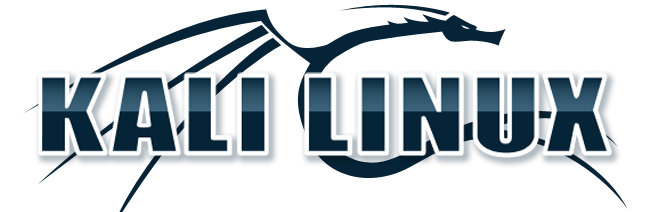
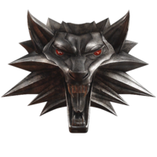

História do Kali Linux
Provavelmente você sabe que o sistema operacional Linux, mantido pelo usuarios é um dos mais utilizados para Hackers em todo o mundo. Mas tavez você não saiba que o simpático Dragãozinho tem um nome e uma história muito curiosa? Pois acompanhe esse artigo para aprender muita coisa sobre esse robozinho.
A primeira versão
A história começou em 2006, quando foi lançado o BackTrack, uma distribuição linux baseada no Ubuntu e que acabou por ser descontinuada posteriormente. O objetivo do BackTrack era o mesmo do Kali Linux e, de certa forma, um é a continuação do outro mas com uma série de melhorias e novas ferramentas.
Essa primeira que particulamente era a minha preferida, foi usada por volta de 2016, mas depois foi atualizada, e favorita por varios hackers do mundo inteiro.
Surge um novo mascote
A ideia de ter um Dragão foi amadurecendo e a missão foi passada para uma profissional da área. E tiveram o dever de deixar ele como uma maneira mais agradável.
A ideia principal era representar tudo graficamente com poucos traços e de forma mais chapada. O desenho também deveria gerar identificação rápida com quem o olha. Surgiu então o Kali, o novo mascote do Kali Linux.
Logo Nova
A principal inspiração para os traços do novo Kali veio daqueles dragãozinhos que ilustram Hqs e livros medievais. Conta a lenda que a artista estava criando em sua mesa no escritório da Offensive Security e olhou para o lado e viu alguem jogando The Witcher 3 e a identificação foi imediata: simples, limpo, objetivo.
Então é isso! Espero que você tenha gostado do nosso artigo com essa curiosidade sobre o sistema Kali linux e seu simpático mascote.